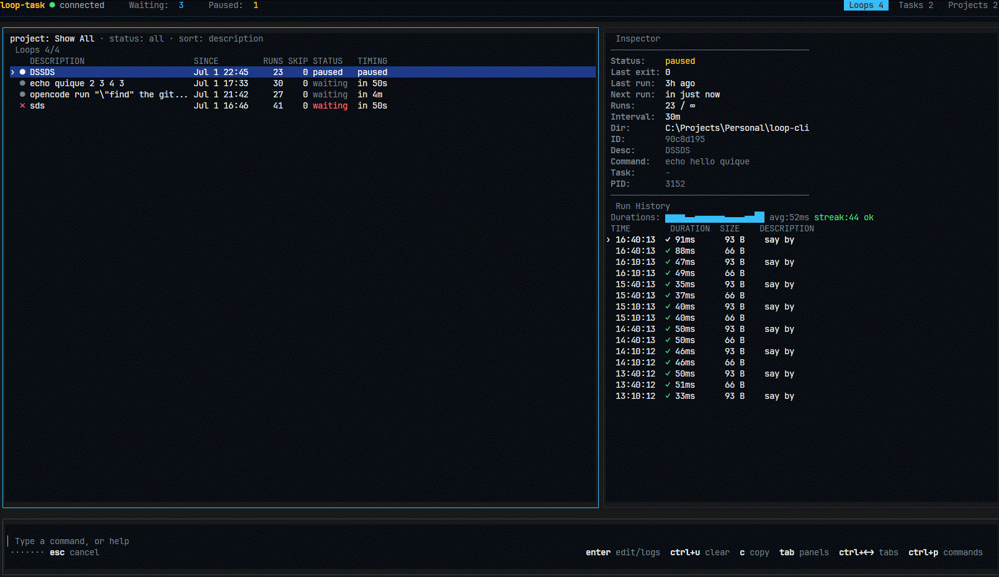

Run anything on a cadence
A loop engineering toolkit for your terminal. Define a purpose, give it an interval, and let it iterate — tests, builds, syncs, health checks, or coding-agent prompts. Background daemon, interactive board, no cron files.
npm install -g loop-task


macOS · Linux · Windows — loops survive reboots
What's loop engineering?
Loop engineering is designing systems that run work on a cadence instead of
triggering each run yourself. A loop is a recurring goal: you define a purpose, give it
an interval, and let it iterate. loop-task is the heartbeat primitive — inspired by
Addy Osmani's Loop Engineering.
One board for every loop
Type loop-task and you get a command-first terminal board — inspired by lazygit, Claude Code, and gh. Keyboard-only, always-focused input, live status.
Everything a loop needs
Background daemon
One process manages every loop. Close the terminal, loops keep running — state persists to disk and survives reboots.
Task chaining
On-success and on-failure chains with context sharing — build pipelines out of loops.
Projects
Organize loops into color-coded projects and scope commands with --project.
Human intervals
10s, 5m, 1h, 1d, 1w — no cron syntax to remember, no cron files to maintain.
HTTP API
REST + SSE endpoints for programmatic control — wire loops into anything.
Agent-ready
Built for coding agents: let Claude Code, Codex, or OpenCode chip away at a backlog every 30 minutes.
Loops you'll actually run
# Run the test suite every 30 minutes
$ loop-task new 30m -- npm test
# Poll a deploy every 10 seconds until you stop it
$ loop-task new 10s -- curl -sf https://example.com/health
# Re-sync a data export once an hour, scoped to a project
$ loop-task new 1h --project etl -- ./scripts/sync.sh
# Have a coding agent chip away at a backlog every 30 minutes
$ loop-task new 30m -- opencode run "find missing translations and translate them, 3 max"
# Run immediately, then every hour
$ loop-task new --now 1h -- npm test
# Run up to 5 times, then stop
$ loop-task run --max-runs 5 5m -- npm testCommands
loop-taskOpen the interactive board.
loop-task startStart the daemon and restore persisted loops.
loop-task new <interval> -- <command>Create a background loop.
loop-task run <interval> -- <command>Run a loop in the foreground.
loop-task stop <id>Stop and interrupt a loop.
loop-task status [--json]Show status of every loop.
loop-task export / importMove loop configs between machines as JSON.
loop-task project …Create, rename, color, and delete projects.
loop-task apiShow the HTTP API endpoints (REST + SSE).
See it run

Start looping
npm install -g loop-task
Requires Node.js 20+ · MIT licensed · then just type loop-task